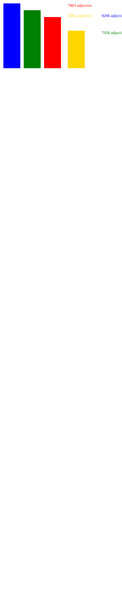

Pokémon Black and White: Translation Analysis

Pokémon Black and White are the fifth generation entries into the Pokémon series. Upon initial release, the game recieved backlash for being too restrictive, only allowing the player to catch Pokémon from the fifth gereation's region until the post-game, having similar Pokémon to previous generations or lazier designs, and the most heavily criticized being too linear and story driven.
The purpose of this project was to analyze different translations as many things can get translated differently, making the experience different for each translated language.
Since both creators of the project are familiar enough with the English language, we decided to look at other languages we are familiar with to see how different the translations are.
Kelly Anderson is the translator for the German sources, with about a decade's worth of studies and a German studies certificate at Penn State Behrend. Aya Sharbaji is the translator for the Arabic sources, with her native language being Arabic, Aya was using the English translation as a secondary language to read but the primary source of translation to compare not only English and Arabic, but German and Arabic as well.
